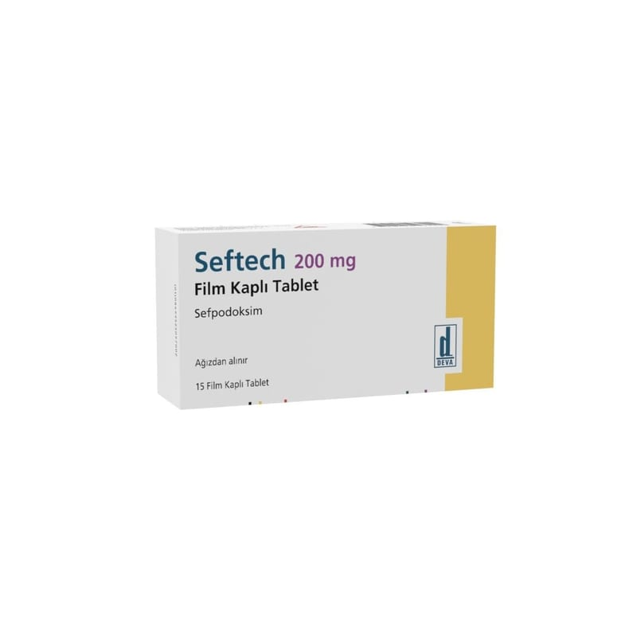

Seftech 200 mg Film Kaplı Tablet, 20 Adet

Ne için kullanılır
KT · Bölüm 1SEFTECH sefpodoksim proksetil adlı etkin maddeyi içerir. Sefpodoksim, vücudunuzda enfeksiyona neden olan bakterileri öldürmek için kullanılır. Sefalosporinler adı verilen bir antibiyotik grubuna aittir.
SEFTECH film tablet formundadır ve ağızdan alınır. 1 kutusu içinde 15 ve 20 film tablet içeren blister ambalajda kullanıma sunulmuştur.
Çocuklarda kullanılmak üzere, SEFTECH oral süspansiyon hazırlamak için kuru toz formu da piyasada bulunmaktadır.
SEFTECH, etkin maddeye duyarlı mikropların neden oldu ğu aşağıdaki enfeksiyonların tedavisinde kullanılır: • Üst solunum yolu enfeksiyonları: - Tonsillit, farenjit (bademcik ve yutak iltihapları)
- Akut sinüzit (sinüs adı verilen kafa içindeki boşlukların iltihabı) - Akut otitis media (sadece çocuklarda) (orta kulak iltihabı) • Alt solunum yolu enfeksiyonları: - Akut bronşit - Pnömoni (bir akci ğer hastalığı = zatüre) - Kronik obstrüktif akciğer hastalığının (KOAH) alevlenmesi • Komplike olmayan alt ve üst idrar yolları enfeksiyonları • Komplike olmayan gonokokal üretrit (cinsel yolla geçen gonore enfeksiyonları) • Cilt ve yumu şak doku enfeksiyonları